Часто задаваемые вопросы
Чем эта раздача отличается от оригинальных?
Прежде всего, чем эта раздача не отличается - набором книг. Вероятность того, что здесь книги нет, а в "оригинальных" раздачах есть - минимальна. Если вы нашли такую книгу - это ЧП, пожалуйста, свяжитесь со мной.
Теперь про отличия.
Главное отличие - размер. Ради него эта раздача и существует.
Дополнительные плюшки:
- Починены книги с нарушениями xml-структуры.
- Починены или удалены битые иллюстрации.
- Устранены столь раздражающие многих дубли (не все, конечно)
- А ещё тут есть комментарии читателей с сайта Флибусты и краткая информация о некоторых авторах.
- Кроме того, здесь раздаётся каталогизатор FLibrary, он лучше, лучше
собакиMyHomeLib.
Почему различается количество книг?
- Удалены дубли
- Выброшены файлы нулевого размера
- Выброшены файлы, оборванные посередине
- Добавлены неиндексированные файлы, т.е. такие, что в архивах есть, а в дампах Флибусты/Либрусека - нет
А почему тогда эта раздача настолько меньше по размеру?
Уменьшение размера достигнуто так:
- Текст книг и иллюстрации хранятся раздельно.
- Тексты пережаты в 7z, что значительно эффективнее, чем zip.
- Картинки перекодированы в JPEG XL, который эффективнее JPEG и PNG.
- Отзывы и информация об авторах невелики по объёму, ~1Гб.
- Удалённые дубли тоже дают свои 5% экономии
- Удалены битые и не поддающиеся починке картинки, но это совсем копейки
Как будет обновляться раздача?
Так же как "оригинальные", в режиме добавления новых архивов
Внимание! Раздача ведётся путём добавления новых архивов; при каждом добавлении создаётся новый торрент. Чтобы начать докачку нового архива, пользователям необходимо сделать следующее:
- Остановить скачивание.
- Удалить старый торрент у себя из клиента, но без удаления файлов раздачи.
- Скачать новый торрент и запустить его у себя в клиенте вместо старого, при этом указать клиенту путь в старую папку куда и должно происходить скачивание новых архивов.
Eсли Вы уже удалили старые архивы, то предотвратить их повторную закачку можно, сняв галочки в соответствующих местах при запуске нового торрента. По возможности, желательно не удалять старые архивы как можно дольше. Так вы поможете другим людям скачать раздачу быстрее.
Буду стараться обновлять раздачу в начале месяца.
Обновления содержат:
- Новый архив с книгами в формате fb2, без картинок
- 2 новых архива с картинками: обложки и иллюстрации
- Обновление индексного файла flibusta_fb2_local.inpx
- Замена дистрибов FLibrary на актуальные, если случился релиз
- Обновление последнего архива с отзывами читателей + новый (месячный) архив с отзывами читателей
- Обновление последнего архива с информацией об авторах + новый архив, если накопилось достаточно новых записей об авторах
К сожалению, такой подход неидеален для отзывов читателей и информации об авторах.
Во-первых, старые записи могут быть исправлены.
Во-вторых, может измениться формат их выгрузки из базы данных Флибусты.
В-третьих, сама эта функциональность не до конца устоялась в FLibrary, так что может потребоваться правка этих файлов.
Поэтому иногда эти файлы будут перевыкладываться оптом, по мере накопления правок в старых записях или по техническим причинам.
Будет ли работать с этой раздачей мой любимый каталогизатор?
Нет, не будет.
И MyHomeLib не будет?
И MyHomeLib не будет.
А xxxLib для yyyOS?
У меня нет ни возможности, ни желания, чтобы проверять все имеющиеся на просторах интернета каталогизаторы на совместимость с придуманным мной форматом хранения. Но почти уверен, что не взлетит. Проверьте сами и сообщите общественности. Результат вашей проверки добавлю сюда, со ссылкой на вас, разумеется.А почему?
- 7z
- Картинки отделены от fb2
И что делать?
Использовать FLibraryНе могу, у меня линукс
- Использовать wine
- Консольный скрипт под линукс / linux, работающий с этой раздачей, от уважаемого razobit
- поиск по автору
- поиск по названию книги
- извлечение книги с изображениями в fb2
что он умеет
Не могу, у меня Windows 7
Да, тогда действительно не можете. Раздача не для вас, извините.нам пишут
для пользователей Windows 7/2008R2 VxKek - так что использовать на 7 можно! Самое главное, чтобы машина была полностью изолированной от сети или в полностью закрытом сетевом контуре. (c) HedgehogInTheCPPКак вернуть в fb2 хранящиеся отдельно обложки и иллюстрации?
Для работы с таким форматом хранения книг в раздаче есть каталогизатор FLibrary. При экспорте книг из коллекции FLibrary возвращает картинки в тело fb2. То же самое при запуске внешней читалки из FLibrary. И при скачивании книги по OPDS. И через web-интерфейсы. Как угодно, если книга извлекается из коллекции при помощи FLibrary, результат будет один - картинки возвращаются в fb2, на свои законные места.Как добавить новую коллекцию?
Диалог добавления или создания новой коллекции можно вызвать из главного меню программы
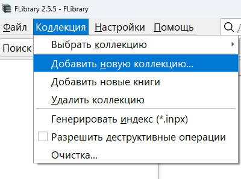
Этот же диалог показывается при первом запуске программы
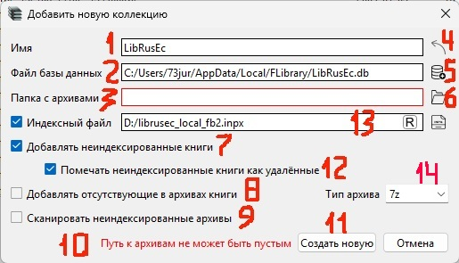
В диалоге следует указать:
1. Имя коллекции
2. Путь к файлу с базой данных
3. Путь к папке с архивами книг, там же программа ожидает найти индексный файл *.inpx
Избежать ошибок при заполнении помогут кнопки
5. Покажет диалог выбора файла базы данных
6. Покажет диалог выбора папки с архивами книг
4. Извлечёт имя из индексного файла коллекции, если найдёт. Чтобы это сработало, надо сначала указать 3
Если что-то было заполнено неверно, об этом скажет строка сообщения об ошибке 10.
После правильного заполнения полей 1-3 можно нажать на кнопку 11. Начнётся процесс создания коллекции. Это не займёт много времени, в зависимости от производительности процессора и скорости диска, на котором вы решили расположить базу данных. На моём компе создание новой коллекции - локальной копии Флибусты занимает около 25 секунд.
Тонкости, нюансы
В качестве базы данных можно указать уже имеющийся файл, например, от более ранней версии программы, или вообще от MyHomeLib. Тогда кнопка 11 поменяет текст на "Добавить", и вместо создания новой коллекции будет добавлена коллекция из указанного файла. ВНИМЕНИЕ! После этого файл базы данных скорее всего не будет пригоден к использованию в той программе, в которой был создан, т.к. FLibrary изменит его структуру под себя.
Опции создания коллекции:
7. Добавлять неиндексированные книги, по умолчанию включено. В коллекцию будут добавлены найденные в архивах книги, о которых нет записей в индексе архива. Т.е. в архиве есть, в индексном файле - нет.
8. Добавлять отсутствующие в архивах книги, по умолчанию выключено. В коллекцию будут добавлены все имеющиеся в индексе книги, даже те, файлов которых нет в архиве. Т.е. симметрично предыдущему, в индексе есть, в архиве может и не быть.
9. Сканировать неиндексированные архивы, по умолчанию выключено. FLibrary просканирует все архивы в указанной папке, в том числе неупомянутые в индексном файле. Т.е. можно подложить в папку с архивами левые архивы с книгами в формате fb2, и они будут добавлены в коллекцию. Разумеется, такое сканирование займёт больше времени, чем простой разбор *.inpx.
12. Помечать неиндексированные книги как удаленные, по умолчанию включено. Неиндексированные файлы находятся в архиве по историческим причинам и обычно имеют индексированные копии.
13. Тип архива. При включенной галке 8 для проиндексированой книги в папке 3 может не оказаться архива. Тогда будет записан архив с именем из индекса и указанным расширением. Такое может понадобиться при поиске нужной книги без скачивания всей раздачи.
Как обновить коллекцию?
Докачиваем обновление раздачи как обычно, при следующем запуске FLibrary обнаружит изменение индексного файла *.inpx и предложит обновить коллекцию. Соглашаетесь, и через несколько секунд всё готово. Тем не менее, время от времени имеет смысл пересоздавать коллекцию "с нуля", т.к. автоматическое обновление подтягивает только отсутствующие ранее данные. В то время как уже имеющиеся описания могут содержать полезные исправления. Иногда полезно пересоздать коллекцию при обновлении версии FLibrary, особенно если это рекомендуется на странице What's Changed. При пересоздании коллекции не забывайте сохранять пользовательские данные.
Для http-сервера FLibrary есть скрытая настройка (см. ниже), побуждающая его молча обновлять коллекцию при изменении *.inpx.
Как найти книгу по названию, автору, серии?
По автору и серии лучше искать в соответствующих разделах навигации, где можно не только искать по списку, но и фильтровать его.
Но доступен и поиск книг по их названию, автору или серии.
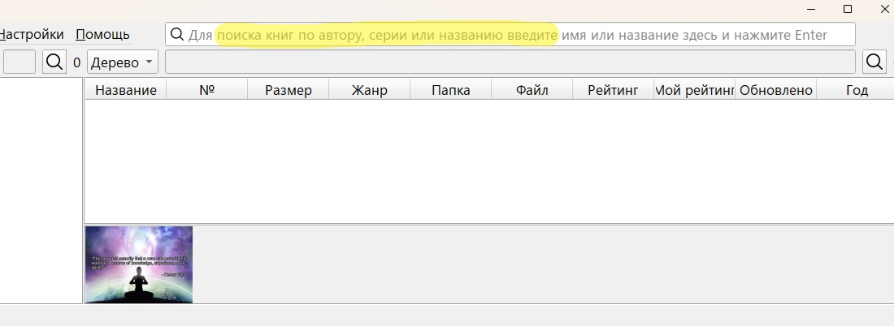
Допустим, надо найти книгу "Гарри Поттер и методы рационального мышления". В программе реализован полнотекстовый поиск по заголовкам книг, поэтому не обязательно вводить всё название. Достаточно ввести пару-тройку слов, даже не целиком, и даже не в исходном порядке.
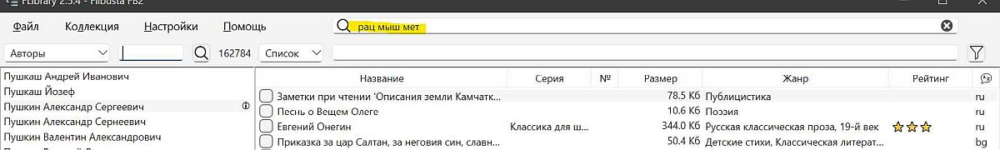
Жмём Enter (или иконку лупы слева), и программа переходит в раздел навигации "Поиск", в окне книг показывает результаты поиска
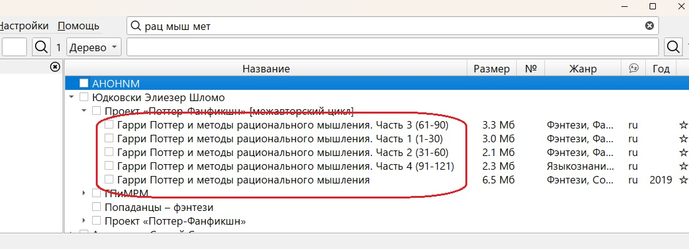
На этом можно было бы и закончить, но добавлю:
- Поисковые запросы запоминаются в разделе "Поиск", здесь их можно выбрать повторно
- Добавить поисковый запрос можно в этом же разделе, кнопкой с плюсиком
- Ненужный запрос можно удалить кнопкой с крестиком
Накопились поисковые запросы. Как их удалить? По одному неудобно
- Выделить все (Ctrl+A) или только ненужные запросы (мышь + Ctrl или Shift)
- Нажать кнопку удаления на одном из выделенных
- Подтвердить удаление в появившемся диалоге
Хочу видеть книги только на одном языке. Или на двух. Можно убрать остальные?
Можно. Через меню Настройки/Фильтры, вызываем диалог настройки фильтров
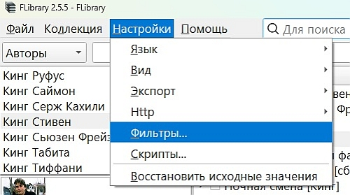
Переходим на вкладку "Языки", помечаем галками в колонке "Книги отфильтрованы" те языки, книги на которых не хотим видеть. Взводим галку "Фильтр включен", жмём "Применить".
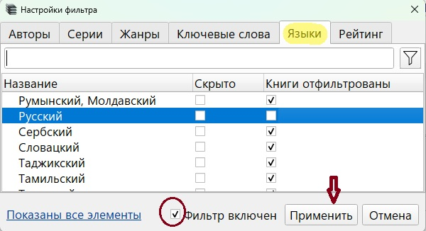
Всё, книги на неугодных языках спрятаны. Галками в колонке "Скрыто" можно скрывать языки из навигации (левой панели главного окна).
Аналогичным образом можно убрать ненужных авторов, серии, жанры и ключевые слова.
Внимание! Галки независимы - убрав из навигации какой-то элемент, вы продолжите видеть связанные с этим элементом книги из других элементов/разделов навигации. И наоборот, отфильтровав книги по какому-то элементу навигации вы продолжите видеть этот элемент навигации в его разделе, а выбрав его, увидите и отфильтрованные книги (если они не были отфильтрованы по другому элементу).
В диалоге работает поиск/фильтр, а у заголовков колонок с галками есть контекстное меню.
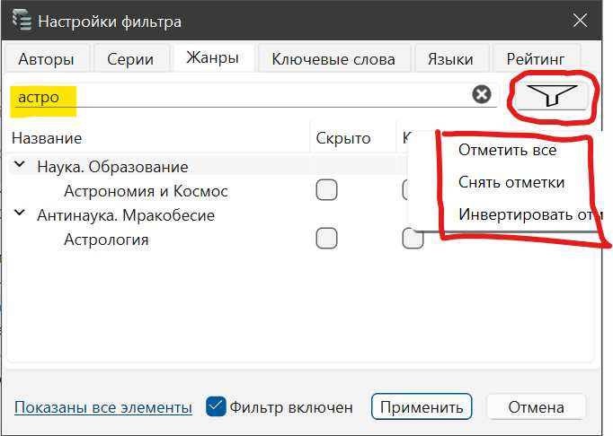
"Быстрый фильтр" по языку по прежнему доступен из контекстного меню заголовка колонки языка таблицы книг
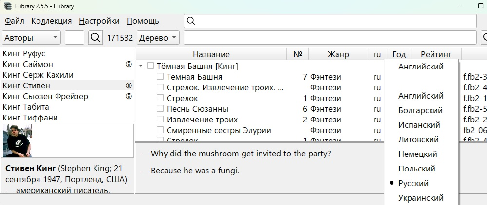
Можно ли физически удалить ненужные мне книги из архивов?
Можно. В программу встроена возможность физической чистки коллекции, с удалением файлов из архива и записей из базы данных. Функция удаления файлов из архива изначально заблокирована, чтобы её разблокировать, нужно в главном меню "Коллекция" выбрать пункт "Разрешить деструктивные операции". После подтверждения намерения продолжать и согласия с опасностью безвозвратной утраты книг в контекстном меню книг активируется пункт "Удалить навсегда". Он же сделает активной галку 7 "Удалить навсегда", вместе с файлами книг из архива, см. ниже.
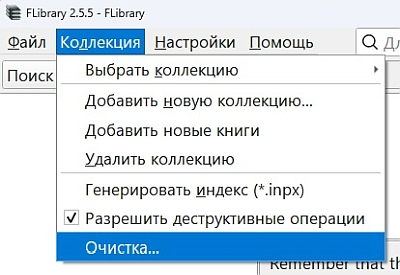
Выбор пункта меню "Очистка..." вызовет окно критериев очистки коллекции.
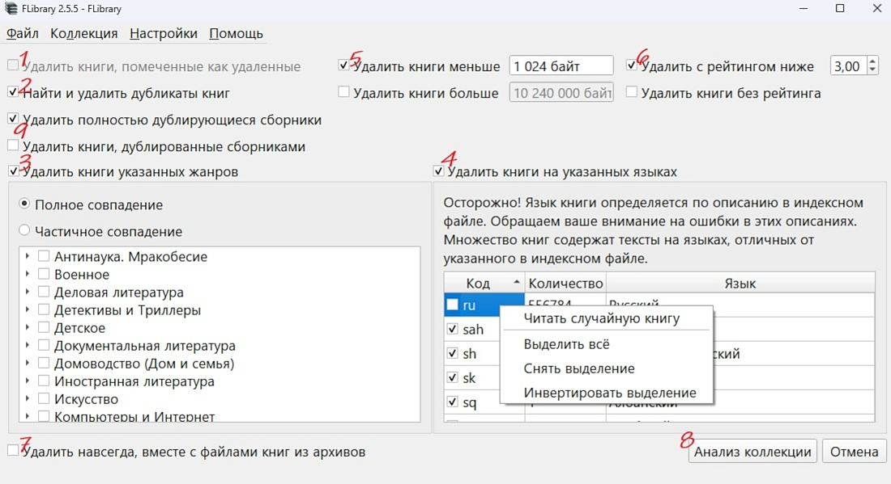
FLibrary поддерживает следующие критерии:
1. "Удалённые" книги. При выборе этого критерия из коллекции будут удалены книги, помеченные в базе данных как удалённые.
2. Дубликаты книг. Программа считает дубликатом одноимённые книги, имеющие хотя бы одного общего автора. При выборе этого критерия такие книги удалятся, кроме одной, добавленной в коллекцию последней. Таким образом, дублями среди прочих окажутся разные издания или разные переводы одной книги. Будьте осторожны.
3. Жанры. Можно отметить нежелательные жанры. У этого критерия есть дополнительная настройка, реализованная радиокнопками
- Полное совпадение. При выборе будут удалены те книги, все жанры которых входят в множество выбранных к удалению.
- Частичное совпадение. Будут удалены те книги, у которых хотя бы один жанр выбран к удалению. Очень опасная опция.
5. По размеру. При выборе этого критерия будут удалены книги, размер файла которых меньше минимального или больше максимального пределов.
6. По рейтингу. Если библиотечный рейтинг книги ниже указанного и/или рейтинга нет, т.е. книгу пока никто не оценил.
9. Сборники
После аккуратной расстановки галок нажимаем кнопку 8 "Анализ коллекции", непродолжительное время ждём анализа коллекции на соответствие указанным критериям, после чего видим сообщение с результатом
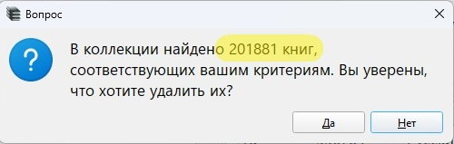
Это последний шанс передумать и нажать "Нет". Но если нажать "Да", программа начнёт удаление книг.
ВНИМАНИЕ! Если взведена галка 7, то файлы книг будут физически удалены из архивов, а их записи - из базы данных. Для этого может потребоваться продолжительное время, в зависимости от количества удаляемых книг, мощности компьютера, производительности диска, на котором располагается коллекция, и т.п. Но не очень долго. Если галка 7 не взведена, то книги будут просто скрыты в интерфейсе FLibrary.
По окончанию чистки коллекции имеет смысл деактивировать деструктивные операции
Как сконвертировать книгу из fb2 в нужный мне формат?
Лень столько читать, можно быстрее?
Можно. Накатить этот ключ реестра, подправить путиWindows Registry Editor Version 5.00 [HKEY_CURRENT_USER\SOFTWARE\HomeCompa\Flibrary\Scripts\a1e61de4-da10-4015-a7c3-91453cd0e215] "Name"="Конвертация в epub" "Number"=dword:00000001 "Type"="ExportToDevice" [HKEY_CURRENT_USER\SOFTWARE\HomeCompa\Flibrary\Scripts\a1e61de4-da10-4015-a7c3-91453cd0e215\37fe0cd3-35ee-4521-85a9-5b3f00138585] "Command"="D:\\programs\\MyHomeLib\\converters\\FB2ePub\\Fb2ePub.exe" "Arguments"="\"%source_file%\" \"D:/books/%author%/[%series%/[%seq_number%-]]%title%.epub\"" "Number"=dword:00000002 "Type"="LaunchApp" [HKEY_CURRENT_USER\SOFTWARE\HomeCompa\Flibrary\Scripts\a1e61de4-da10-4015-a7c3-91453cd0e215\3b791fea-5942-479d-b7e2-6c3c3f6862cd] "Command"="mkdir" "Arguments"="\"D:/books/%author%/[%series%]\"" "Number"=dword:00000001 "Type"="System"
В составе FLibrary нет встроенных конвертеров, но есть возможность прикрутить любой внешний, если он имеет интерфейс командной строки. Например, можно позаимствовать нужный конвертер из состава MyHomeLib. Для вызова из FLibrary внешнего конвертера нужно настроить скрипты, по одному на каждый желаемый формат.
1. В главном меню выбираем Настройки/Скрипты...
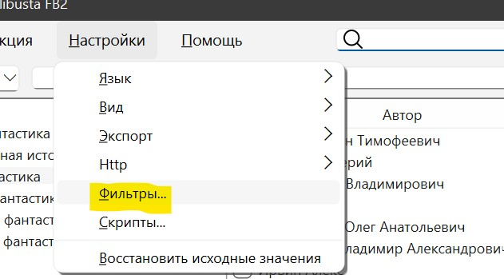
2. В появившемся окне нажимаем "Добавить скрипт"
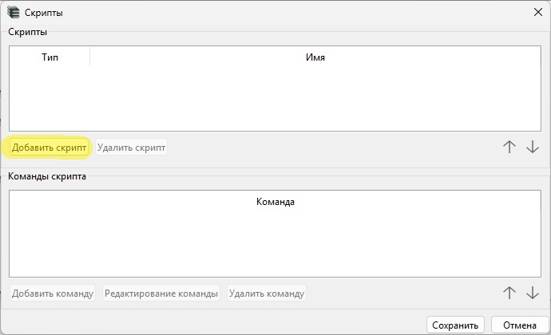
3. В верхней части окна ("Скрипты") появится строка, в неё вбиваем желаемое имя скрипта
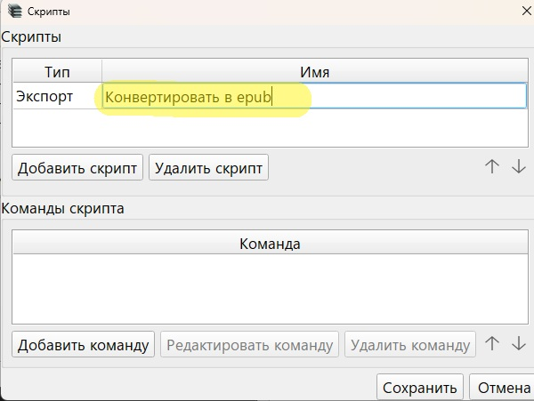
Теперь нужно добавить команды скрипта. Какие именно - зависит от выбранного внешнего конвертера. Типичный набор состоит из двух команд: 1. создать папку, 2. вызвать конвертер. Итак, добавляем команды.
4. Жмём "Добавить команду"
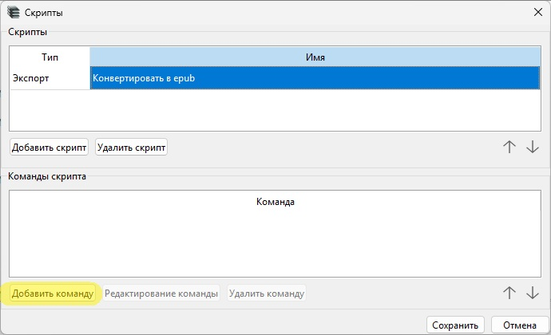
5. В нижней части окна ("Команды скрипта") появится строка, в первом её столбце "Тип" из выпадашки выбираем "Системная команда"
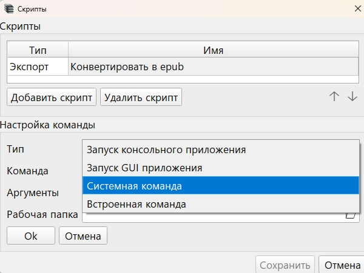
6. Во втором столбце вбиваем mkdir, т.е. создать папку
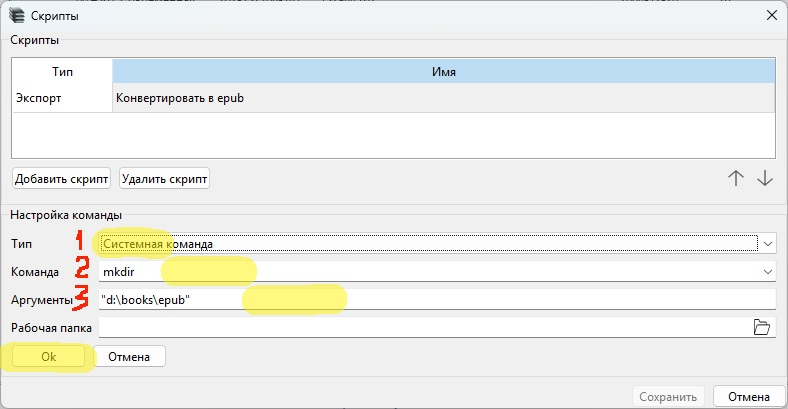
7. В третьем столбце "Аргументы" вводим желаемый путь. ВНИМАНИЕ! Слеши должны быть в стиле Windows, т.е. такие - \. Каждый аргумент желательно заключать в кавычки. Пример:
"D:\books\epub"
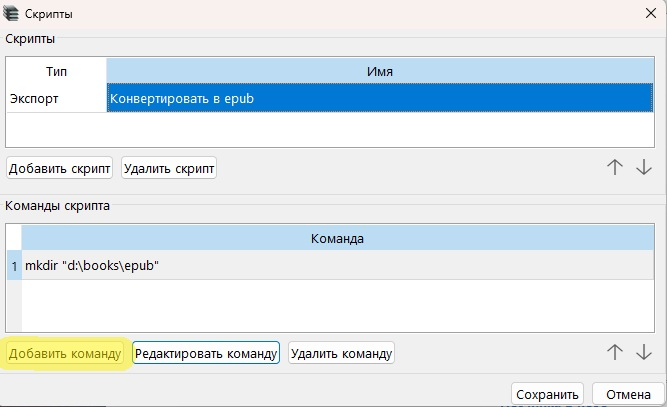
8. Добавляем команду запуска конвертера: жмём "Добавить команду", тип - "Запуск приложения", жмём на иконку выбора приложения
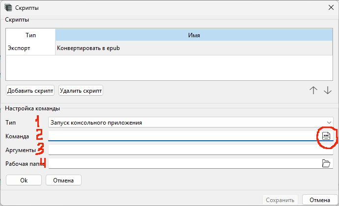
9. В появившемся диалоге выбора файла указываем желаемый внешний конвертер:
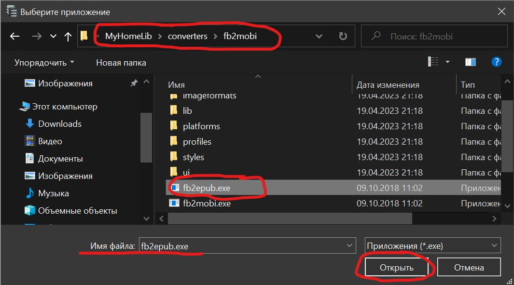
10. Добавляем параметры запуска конвертера в колонке "Аргументы". Этому конвертеру нужны пути к файлам, исходному и сконвертированному. Вводим
"%source_file%" "d:\books\epub\book.epub"
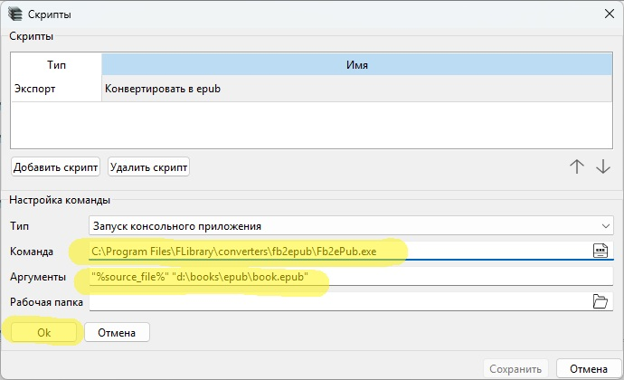
11. Сохраняем скрипт

Всё, скрипт готов. Теперь в контекстном меню книг, в подменю экспорт есть пункт "Конвертация в epub", т.е. название скрипта из п.3
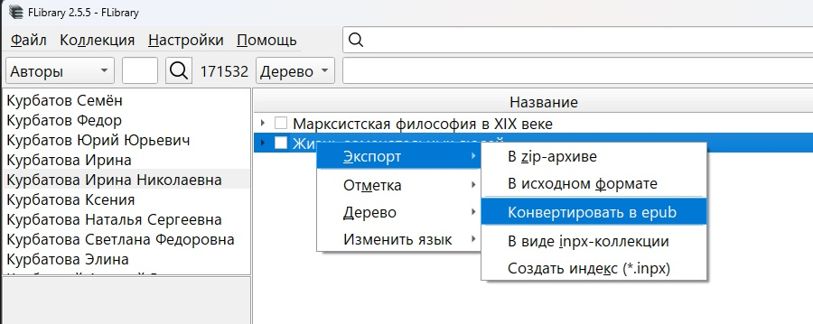
Если его выбрать, в папке D:\books\epub появится файл book.epub.
Вероятно, мало кто захочет конвертировать книги каждый раз в один и тот же файл, т.к. хочется, чтобы файлы сохранялись в папки по именам авторов, именовались заголовками книг. Для этого в командах скрипта при указании папок следует использовать макросы. Например, чтобы путь к книге содержал её автора и серию (если есть), а имя файла - номер в серии (если есть) и заголовок книги, следует указать такую строку:
"D:/books/%author%/[%series%/[%seq_number%-]]%title%.epub"
Полный список имеющихся макросов доступен из контекстного меню редактирования Аргументов
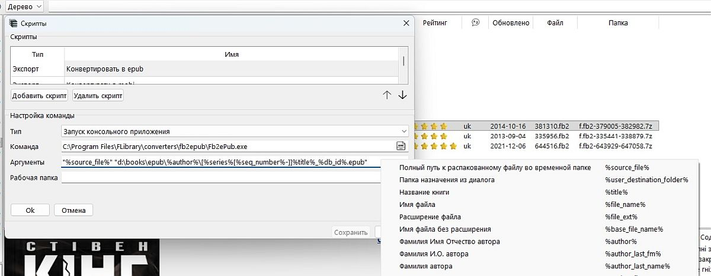
Выбрал раздел навигации 'Все книги', как теперь выйти из него?
Перейти по любой ссылке из аннотации к любой книге.
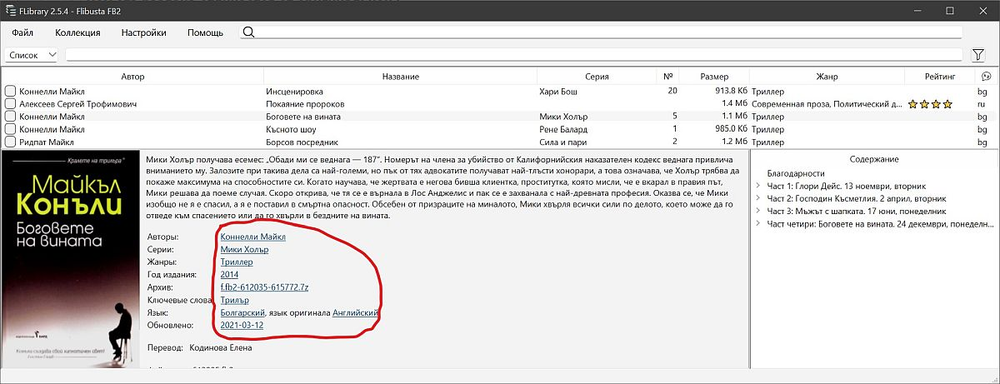
Как узнать, есть ли в раздаче нужная мне книга?
Есть два варианта:
с каталогизатором (рекомендуется)
- Скачиваем индексный файл *.inpx и один из инсталляторов FLibrary, на свой вкус
- Устанавливаем FLibrary
- Создаём коллекцию по индексному файлу с опцией "Добавлять отсутствующие в архивах книги"
- Ищем в программе нужную книгу
с файлом содержания
Скачиваем файл contents.7z. В архиве текстовые файлы в формате csv, по файлу на язык. Каждая строчка файла описывает одну книгу. Формат: авторы, название, серия (номер в серии), архив, файл. Разделитель - табуляция.
Этот способ имеет смысл, если вас потом устроит книга без обложки и иллюстраций. Иначе всё равно придётся скачивать и устанавливать каталогизатор.
с индексным файлом
Скачиваем индексный файл *.inpx. Он - обычный zip-архив, содержащий текстовые файлы *.inp, где каждая строка описывает одну книгу раздачи. Строка суть csv, разделитель - байт с кодом 04. Список полей: AUTHOR;GENRE;TITLE;SERIES;SERNO;FILE;SIZE;LIBID;DEL;EXT;DATE;LANG;LIBRATE;KEYWORDS;YEAR;SOURCELIB В файлах можно искать по тексту вашим любимым просмотрщиком текстов. Рекомендую встроенный в Far Manager.
Этот способ имеет смысл, если вас потом устроит книга без обложки и иллюстраций. Иначе всё равно придётся скачивать и устанавливать каталогизатор.
Как добыть нужную книгу без скачивания раздачи целиком?
1. Узнаём, есть ли в раздаче нужная вам книга, см. инструкцию выше
2. Узнаём имя архива, в котором находится книга
3. Скачиваем этот архив, подкладываем под FLibrary
4. Извлекаем файл книги
...
PROFIT!!!! Теперь книгу можно экспортировать из FLibrary.
Можно даже не скачивать архив
, а вместо этого настроить скрипт скачивания нужной книги непосредственно с сайта Флибусты. Дополнительно понадобится какое-нибудь консольное приложение для скачивания файлов из интернета (например curl), его надо скачать и установить. Если у вас обычная версия FLibrary, установленная инсталлятором, то для настройки скрипта можно вкатитьвот такой ключ реестра
Windows Registry Editor Version 5.00 [HKEY_CURRENT_USER\SOFTWARE\HomeCompa\Flibrary\Scripts\933c6488-b061-44d6-82fa-6257a6144f0f] "Name"="Скачать с Флибусты" "Number"=dword:00000001 "Type"="ExportToDevice" [HKEY_CURRENT_USER\SOFTWARE\HomeCompa\Flibrary\Scripts\933c6488-b061-44d6-82fa-6257a6144f0f\b2206572-8ef6-4a69-8f97-71bcb151505d] "Command"="mkdir" "Arguments"="\"c:/books/%author%/[%series%]\"" "Number"=dword:00000001 "Type"="System" [HKEY_CURRENT_USER\SOFTWARE\HomeCompa\Flibrary\Scripts\933c6488-b061-44d6-82fa-6257a6144f0f\d27e10fd-3816-41b1-af5b-a9a17043ad12] "Command"="D:\\programs\\curl\\bin\\curl.exe" "Arguments"="-o \"c:/books/%author%/[%series%/[%seq_number%-]]%title%.zip\" -L \"http://x.flibusta.is/b/%lib_id%/download\"" "Number"=dword:00000002 "Type"="LaunchApp"
Можно даже обойтись вез внешних средств
, но скрипт настраивать всё равно придётся. Зато теперь без curl'а, и достаточно одной встроенной во FLibrary команды:- Добавляем скрипт
- Как-нибудь называем его, например "Скачать с Флибусты"
- Добавляем команду
- Выбираем из выпадахи тип "Встроенная команда"
- Выбираем команду "Скачать"
- Задаём параметры команды (куда класть, откуда качать). Для скачивания с Флибусты в папку t:/ftp указываем -o "t:/ftp/%author%/[%series%/[%seq_number%-]]%title%.zip" "http://x.flibusta.is/b/%lib_id%/download" В вашем случае указываете какой-нибудь валидный путь, типа C:\books. Или на ваш вкус, лишь бы диск был в системе и были права на запись. Можно также поменять шаблон пути, в контекстном меню строки ввода аргументов доступно контекстное меню с доступными макросами.
- Сохраняем получившееся
У меня дома 5 компов и 3 ноута. Мне надо скачивать раздачу и ставить FLibrary на все эти устройства?
Не обязательно. FLibrary предоставляет некоторые сетевые возможности в виде нескольких http-сервисов. Для доступа к ним необходимо запустить имеющийся в составе FLibrary http-сервер. Выбираем пункт меню
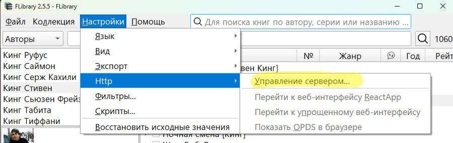
В открывшемся диалоге Жмём Пуск и всё, сервер запущен, можно посмотреть на его работу. Для этого можно ткнуть в ставшие кликабельными надписи.
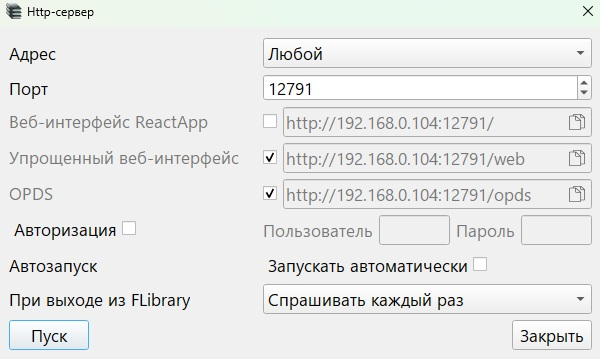
- Веб-интерфейс ReactApp. В браузере откроется сайт, разработанный уважаемым alloroc2. Тут можно искать книги по названию/автору/серии, скачивать их и даже читать прямо там, на сайте. Очень удобно. Интерфейс сайта вполне интуитивен, функциональность постоянно расширяется.
Описание от alloroc2
Работать через веб можно в браузере с любого устройства.
Поиск при вводе текста сразу с разбивкой результатов по названиям, авторам и сериям.
Просмотр групп книг, заранее отобранных в программе.
Для выбранной книги статистика + обложка, оглавление с указанием глав и их положения в книге.
Выбранную книгу можно читать не выходя из веб интерфейса каталогизатора.
Для удобства чтения переключение в полный экран, а так же прокрутка текста.
Управление шрифтом и скорость прокрутки горячими клавишами.
Прогресс чтения запоминается в браузере.
Открыл вебку, нашел книгу и выпал из реальности. - Упрощённый веб-интерфейс. Откроется страничка в браузере, отражающая мои познания в html. Там тоже поиск, навигация по коллекции, скачивание и чтение. Но совершенно без какого либо дизайна, предельный минимализм. Очень на любителя, но мне хватает.
- OPDS Откроется страничка в браузере с каким-то JSON'ом. Собственно, по этому адресу надо ходить не браузером, а читалкой с поддержкой протокола OPDS.
При запущенном http-сервере эти адреса доступны с любого устройства, находящегося в одной локальной сети, т.е. на другом компьютере/смартфоне/планшете можно зайти на два варианта веб-интерфейса, а также подключиться читалкой к каталогу OPDS.
Это только дома будет работать? А через интернет нельзя?
Можно, но пробрасывать указанные порты во внешний мир придётся самостоятельно. Я в этом не разбираюсь настолько, что даже не уверен в осмысленности предыдущего предложения. Гуглить "белый IP" и "туннели CloudFlare.com". Буду благодарен всяким умным словам в личку про это вот всё.умные говорят
доступ извне я прокинул через nginx - просто добавил поддомен book.ххх.хх, получил для него сертификат и теперь можно ходить по https, а nginx уже перенаправляет во внутренней сети на http.(c) SoloMen
Смог с помощью Tilescale. Что я собсна сделал чтобы пользоваться:
- Скачал сам TileScale (где то на просторах интернета говорят есть его опенсрусь аналог) на тапок и комп;
- Включил их (тапок и комп) в общую сеть с помощью Tilescale;
- Включил в FLibrary по ЧаВо сервер и включил именно адрес который стоит в Tilescale, в моем случае это оказался прикрепленный адрес 100.84.44.127 (те кто будут тоже такой способ пробовать, может оказаться другой адрес, смотрите на сайте в панели управления или в диспетчере задач тыкнув в графу с Tilescale, в графе IPv4-адрес под графиком будет собсна сам адрес который и прикрепляем), для себя конкретно оставил включенным opds режим, его же адрес и вбил в строку для AlReader'а;
- Собсна профит;
UPD В настройке адреса http-сервера можно указать "Любой", тогда сервисы будут доступны через все имеющиеся интерфейсы: localhost, 127.0.0.1, локальный IP-адрес, и т.д.
А это ничего, что мой антивирус ругается на раздачу?
Ничего. В настоящее время известно о нескольких причинах срабатывания антивирусов на эту раздачу.
- Инсталлятор FLibrary_setup.exe.
Файл генерируется одним из самых популярных средств создания инсталляторов Inno Setup. Можно предположить, что этим же инструментом пользуются и вирусописатели, поэтому сигнатуры Inno Setup регулярно попадают в антивирусные базы. Что с этим делать? Солидные софтверные конторы в аналогичных случаях связываются с вендорами, те подкручивают свои базы, и антивирусы перестают ложнореагировать. Увы, я не солидная контора, в случае с FLibrary остаётся лишь довериться моему честному слову и забить на антивирус. Я так и делаю. Ещё можно использовать msi-инсталлятор или архив с "портабельной" версией, на них вирустотал ни разу не ругался.
Или тщательно изучить исходные коды на предмет вредоносности и собирать проект самостоятельно.
- В библиотеке есть книга Олега Михайловича Бойцова "Защити свой компьютер на 100% от вирусов и хакеров", файл 166093.fb2 в архиве fb2-166043-168102.7z.
Похоже, некоторым антивирусам не нравятся примеры содержащегося там вредоносного кода. По-моему, это явный перебор и паранойя. Если ваша читалка не пытается интерпретировать и запускать скрипты со страниц книг - беспокоиться не о чем, можно смело добавлять *.fb2 в исключения антивируса.
- Есть также книга Чадова Тимофея "Использование ListView в режиме виртуального списка", файл 170704.fb2 в архиве fb2-168103-172702.7z. В неё автор вложил исполняемый exe-файл, на который ругался как минимум один вендор с virustotal. Но насколько мне известно, антивирусы пока не пытаются парсить fb2 с целью декодировать бинарные вложения из base64, распаковать полученный архив, проанализировать его содержимое. Если ваша читалка не пытается исследовать бинарные вложения книг, на которые нет ссылок с её страниц, с целью запуска внезапно найденных там программ, то беспокоиться опять не о чем.
Нашёл косяк в программе, что делать?
- Убедиться, что косяк имеет место в последнем релизе FLibrary. Особенно это касается опечаток, уйма которых была найдена и исправлена во время написания этих инструкций.
- Запостить багрепорт тут, по возможности описав косяк, приложив скриншот, etc
Обещают быструю работу FLibrary, а по факту тормоза. Наврали?
Как минимум у одного пользователя наблюдались помехи в работе программы со стороны Microsoft Defender'а, что проявлялось в замедлении работы и повышенном потреблении оперативной памяти. Настройка Defender'а помогла.
Попробуйте внести в исключения антивируса
- Папку с программой
- Папку с базой данных коллекции
- Папку с архивами книг
- Папку с временными файлами (%TEMP%)
В меню есть какие-то 'развлечения'. Взвёл все галки, что дальше?
Развлекательный контент показывается взамен пустой аннотации, когда в окне книг не выбрано ни одной книги.Например
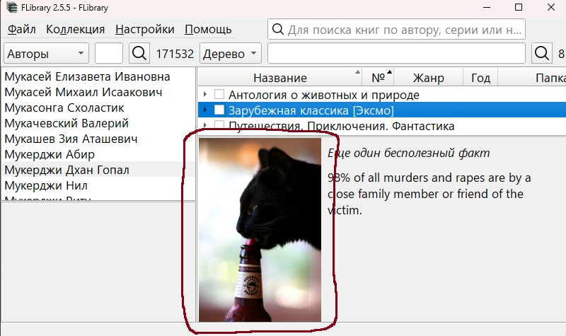
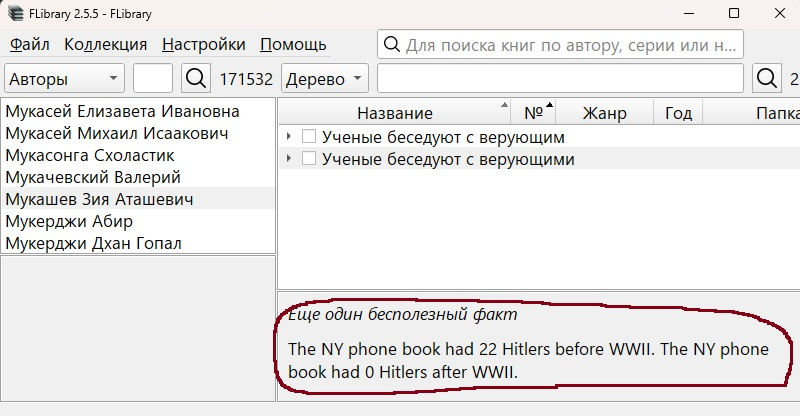
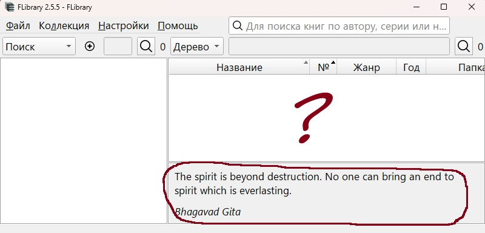
Вижу пустую аннотацию, где шутки?
Чтобы это работало, нужен доступ а) к интернету, б) к сервисам, предоставляющим контент. Следует учитывать, что какие-то сервисы могут перестать работать. А к некоторым нет доступа из вашей локации без впн.
Почему всё на английском?
Если найдёте (или поднимите свой) подобный публичный (без регистрации и смс) сервис на другом языке - дайте мне знать, прикручу.
Зачем в раздаче столько инсталляторов FLibrary?
Three Rings for the Elven-kings under the sky
Seven for the Dwarf-lords in their halls of stone
Nine for Mortal Men doomed to die
Генерируется InnoSetup. Основной инсталлятор, наиболее удобный и функциональный. Позволяет
- Выбрать язык инсталлятора
- Выбрать режим установки только для меня/для всех
- Запустить прогу сразу после установки
II FLibrary_setup_x.y.z.msi
Microsoft Windows Installer. Скорее всего, я просто не умею его готовить, но
- Язык инсталлятора один и для универсальности английский
- Программа устанавливается только для всех, в `C:\Program Files`
- После завершения работы инсталлятора автоматически ничего не запускается
III FLibrary_portable_x.y.z.7z
Это вообще не инсталлятор, а просто архив с бинарями. Распаковывать и настраивать ярлыки запуска придётся самостоятельно, ручками. Установленная таким образом программа свои настройки хранит не в реестре, а в лежащем рядом ini-файле, типа portable. Следовательно, распаковывать надо туда, где есть доступ на запись.
Ну и какой ставить-то?
Содержимое всех инсталляторов практически идентично, можно ставить любой, на свой вкус и опыт. Но рекомендую первый вариант, поскольку сам использую именно его. Остальные два не тестируются почти никогда.
А где программа хранит ...?
настройки
Обычная версия (установленная инсталлятором) - ветка реестра HKEY_CURRENT_USER\SOFTWARE\HomeCompa\Flibrary
Портабельная версия (из архива) - файл FLibrary.ini в папке программы
журнал работы (логи)
Файл %TEMP%\HomeCompa.FLibrary.log
Последние записи лога можно увидеть прямо в программе, нажав Esc. Или через меню Настройки/Вид/Журнал/Показать.
А можно полный список скрытых настроек FLibrary?
Мало кому нужные вещи, поэтому их нет в интерфейсе, дабы не загромождать.
- v2.0.0 `Preferences/LibRate/symbol`, число по умолчанию 11088 - ascii или utf-8 код символа звёздочки ⭐ для колонок рейтинга. Коды разных символов можно посмотреть тут. Можно использовать те, что имеют в Hex не более четырёх знаков.
- v2.1.2 `Preferences/hideScrollBars`, строка (true | false) по умолчанию true - управляет видимостью скроллбаров. Если задать 'false'. скроллбары не будут прятаться.
- v2.1.4 `Preferences/GenresSortMode`, строка (SortByCode | SortByName | SortByChildCount | SortByCodeDesc | SortByNameDesc | SortByChildCountDesc), по умолчанию SortByCode - режим сортировки жанров
- v2.1.4 `Preferences/opds/BookEntryLimit`, число DWORD, по умолчанию 25 - лимит на количество книг, отдаваемое одним списком по http.
- v2.2.0 Не настройка, но скрытая функциональность. Сочетание Alt+Shift+Q вызовет окно, в котором можно выполнять SQL-запросы к базе данных коллекции. Результаты выполнения запросов - в логах.
- v2.2.1 `Preferences/opds/transliterate`, строка (true | false) по умолчанию false - транслитерация имени файла, скачанного по http.
- v2.2.1 `Preferences/LibRate/precision`, число DWORD, по умолчанию -1 - заменяет звёздочки рейтинга книги в библиотеке на число с указанной этим параметром точностью. Для действительно среднего рейтинга по Флибусте потребуется файл reviews\additional.zip. При отсутствии этой настройки или при её значении -1 показываются звёздочки.
- v2.2.1 `Preferences/LibRate/colors/2.0`, `ui/Books/LibRate/colors/3.0`, `ui/Books/LibRate/colors/4.5`и т.п. Число DWORD, соответствующее цвету в формате RRGGBB. Для градиентной раскраски цифер рейтинга из предыдущего пункта.
- v2.2.2 `Preferences/AnnotationJokes/Visible`, строка (true | false) по умолчанию true - при установке в 'false' отключает функциональность развлекательного контента в пустой аннотации
- v2.2.2 `Preferences/AnnotationJokes/%ApiName%Visible`, строка (true | false) по умолчанию true - при установке в 'false' отключает работу %ApiName%, прячет соответствующий пункт меню `Настройки/Вид/Аннотация/Развлечения/%ApiNameTitle%`. Имеет смысл отключить те API, которые недоступны в вашей местности. Или переставшие работать.
- v2.3.0 `Preferences/opds/ReadUrlTemplate` Шаблон ссылки на читалку из Web. Например, если установить в `http://127.0.0.1:44080/#/reader?url=http://%HTTP_HOST%:%HTTP_PORT%/Images/fb2/%1` то можно читать книжки либерамой. Перед этим либераму надо скачать, настроить и запустить. Возможно, настройке когда-нибудь найдётся и другое применение.
- v2.3.0 `Preferences/opds/SeparatedSearch`, строка (true | false) по умолчанию false - для OPDS и Web-интерфейса включает режим раздельного поиска по авторам, сериям, названиям книг, всё вместе.
- v2.3.0 `Preferences/opds/AutoupdateCollection`, строка (true | false) по умолчанию false - при установке в `true` http-сервер (opds.exe) будет следить за inpx и, в случае его изменения, автоматически обновит коллекцию.
- v2.4.1 `Preferences/StartFocusedControl`, строка (SearchBooksByNames | NavigationSearchAndFilter | BooksSearchAndFilter) по умолчанию SearchBooksByNames - поле ввода, активное на старте программы.
- v2.4.1 `Preferences/Alphabets/LinkedControl`, строка (SearchBooksByNames | NavigationSearchAndFilter | BooksSearchAndFilter) - поле ввода, с которым работает панель алфавитов. По умолчанию - не указано, панель алфавитов работает с активным полем ввода, т.е. с тем, в котором сейчас находится курсор.
- v2.4.1 `Preferences/CommonBooksTableColumnSettings`, строка (true | false) по умолчанию false - при установке в `true` настройка столбцов таблицы книг станет общей для всех режимов навигации.
- v2.5.0 `Preferences/AnnotationReviewSortMode`, строка (Time | Reviewer | Text | TimeDesc | ReviewerDesc | TextDesc), по умолчанию Time - режимы сортировки отзывов читателей в аннотации.
- v2.5.4 `Preferences/HideToTray`, строка (true | false) по умолчанию false - при установке в `true` программа по Alt+F4 и по нажатию на крестик в главном окне прячется в системный трей. Выход через главное меню и по горячей клавише закрывает программу.
- v2.5.4 `Preferences/MultipleInstance`, строка (Enabled | Disabled | Dialog) - настраивает возможность запуска нескольких экземпляров FLibrary. Enabled - можно запустить несколько экземпляров, Disabled - нельзя, при запуске следующего экземпляра приложения будет показан уже имеющийся, Dialog - при запуске следующего экземпляра будет показан диалог. По умолчанию - Enabled. Но если установлен режим HideToTray (см. выше), то всегда Disabled, вне зависимости от установленного значения настройки.
- v2.5.4 `Preferences/Export/TransliterationMode, строка (None | FileNameOnly | AllExceptUserPath | All) - настраивает транслитерацию имени экспортируемых файлов. По умолчанию - None, т.е. не транслитерировать. FileNameOnly - будет транслитерировано имя файла, AllExceptUserPath - транслитерировать путь экспорта кроме выбранной пользователем папки (%user_destination_folder%), All - транслитерировать весь путь экспорта.
- v2.5.4 `Preferences/Interaction/Book/OnLink`, строка (Read | ExtractAsFb2 | ExtractAsZip) - настраивает поведение программы по клику на ссылку-заголовок книги в аннотации. По умолчанию - Read - открыть книгу в читалке. ExtractAsIs - извлечь книгу. ExtractAsZip - извлечь книгу и упаковать её в zip-архив.
- v2.5.4 `Preferences/Interaction/Book/OnDoubleClick`, строка (Read | ExtractAsFb2 | ExtractAsZip) - настраивает поведение программы по двойному клику на строке в таблице книг, значения те же, что в предыдущей настройке.
- v2.5.4 `Preferences/RelativePaths', строка (true | false) по умолчанию false - при установке в `true` программа будет сохранять в настройках относительные пути (читалка, скрипты, ...)
ВНИМАНИЕ!!! Настройки эти следует добавлять по мере необходимости, по умолчанию в хранилище настроек их нет. Где искать настройки - см. "А где программа хранит ...?".